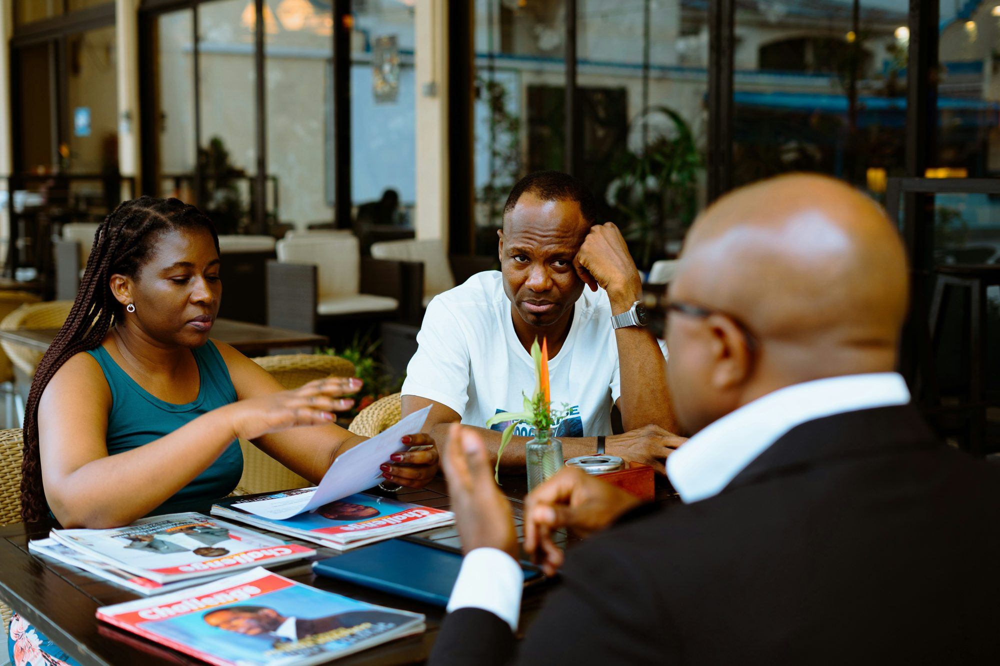

We are built on the charity of small actions. A meal shared. A hospital bill paid. A school fee covered. An afternoon spent with someone who is alone. None of it is grand. All of it is offered for a stranger waiting to receive it.
Strangers for Mary does not pass a collection basket. Every campaign we run is funded by the work of the strangers themselves: things we make, sell, organise and build together. If we give a meal, someone worked for it. If we pay a hospital bill, someone laboured for it.
That is what makes our charity mean something. And it means anyone can take part, whatever is in their pocket, because everyone has time and hands.
Charity that costs us something is charity that means something.
Every small act, offered for someone waiting to receive it.

The sick and those who care for them. Families who do not have enough. Young people who cannot afford to keep learning. Anyone carrying something too heavy to carry alone. Like Mary at Cana, we try to see the need before anyone has to ask.
And we give as we pray: not to be thanked, but because they are her children too.
Imagine strangers in every country, each giving an hour of work, and all of it flowing to the same hospital ward, the same village, the same family on the same day. That is what a network of prayer can become when it learns to give. We want Strangers for Mary to be the place where Catholics everywhere turn their faith into something a stranger can touch.
Join the strangers, and when the first campaign opens, you will be among the first to hear and the first to help. Or join the team that builds our giving from the ground up.